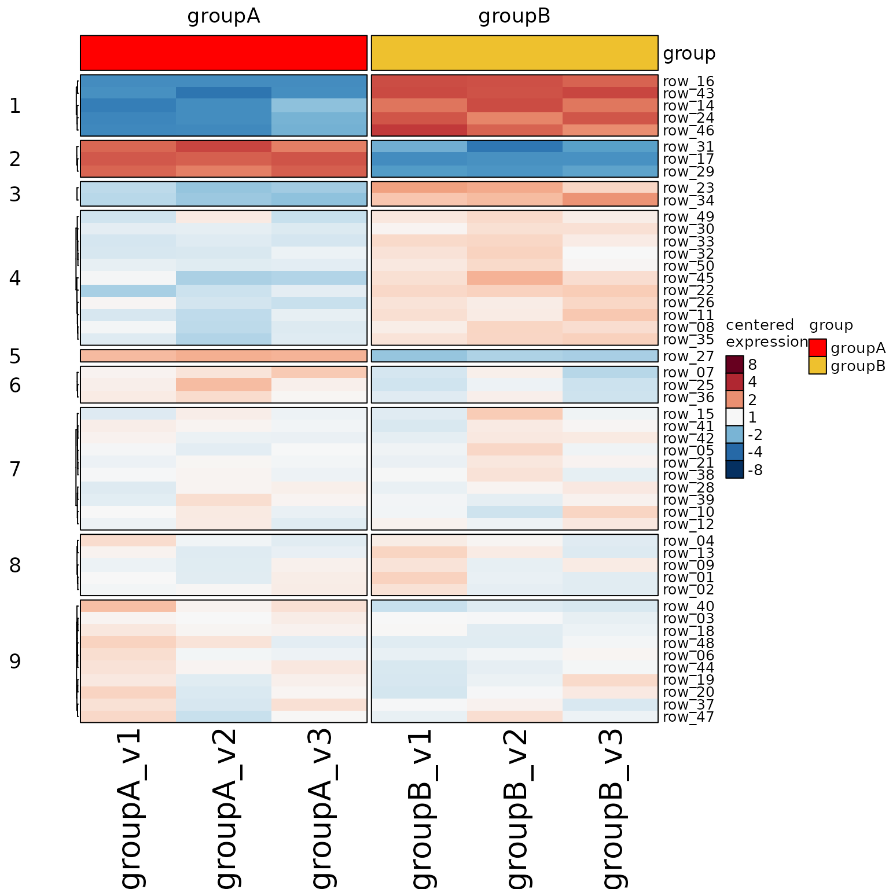
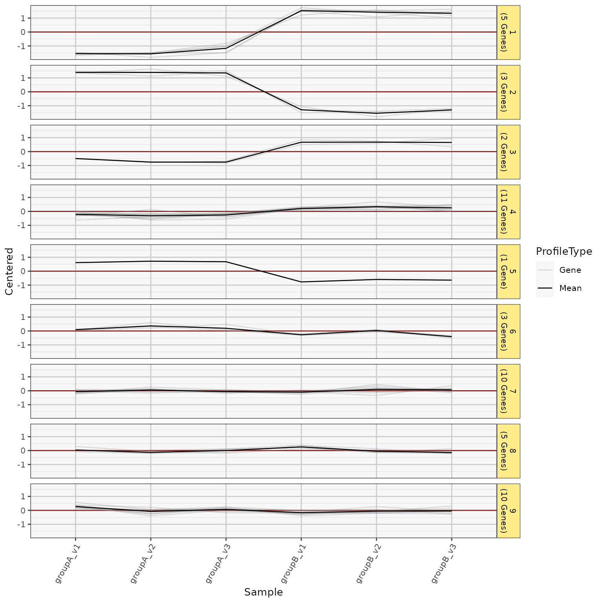
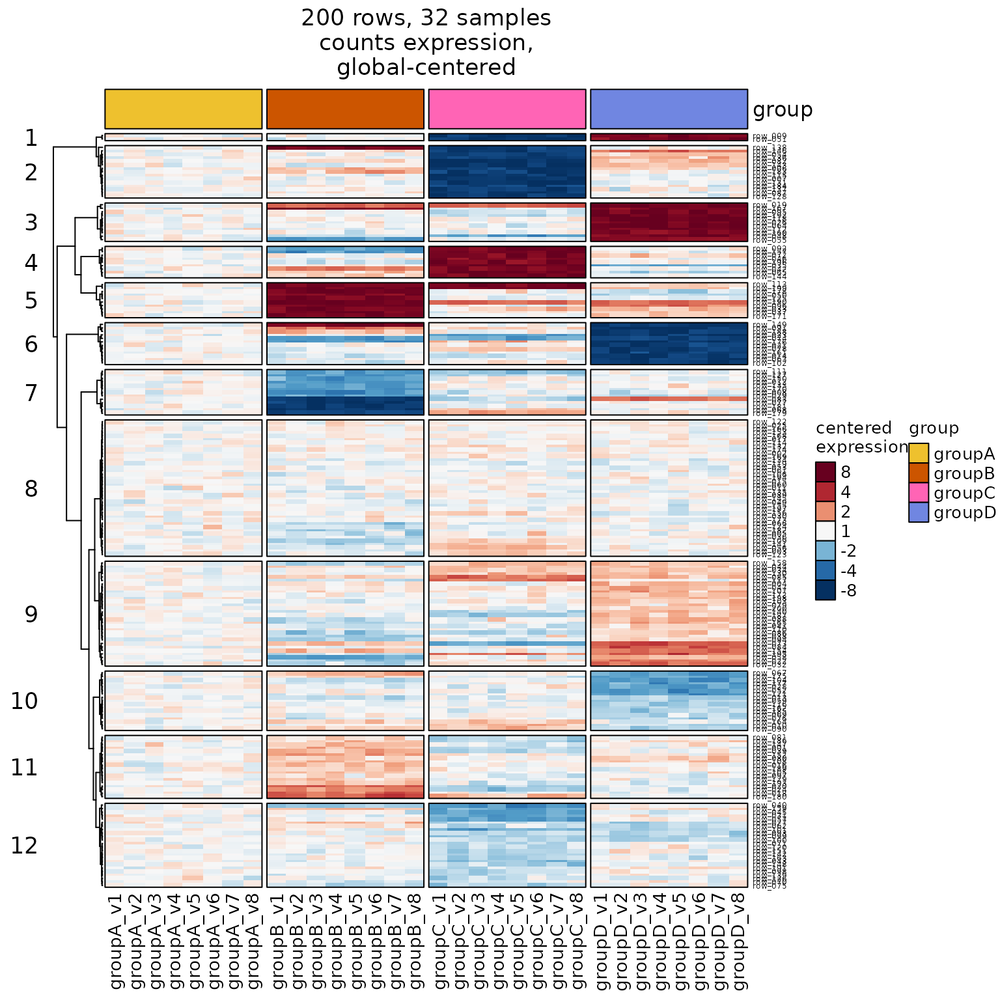
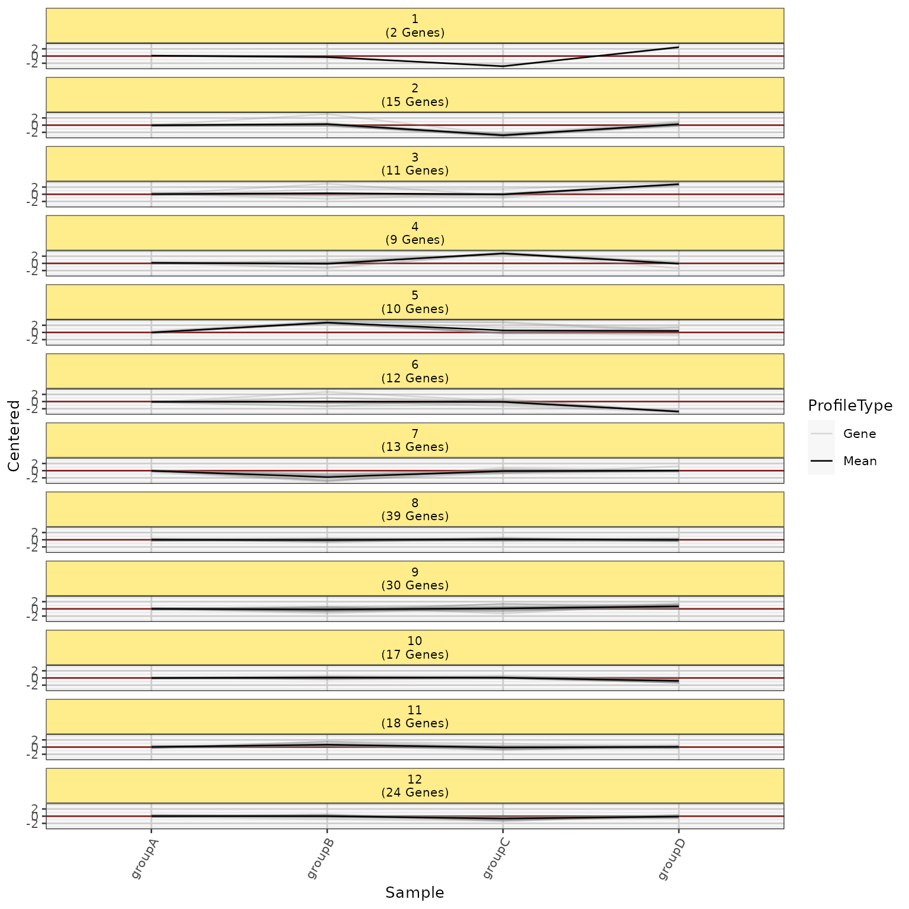
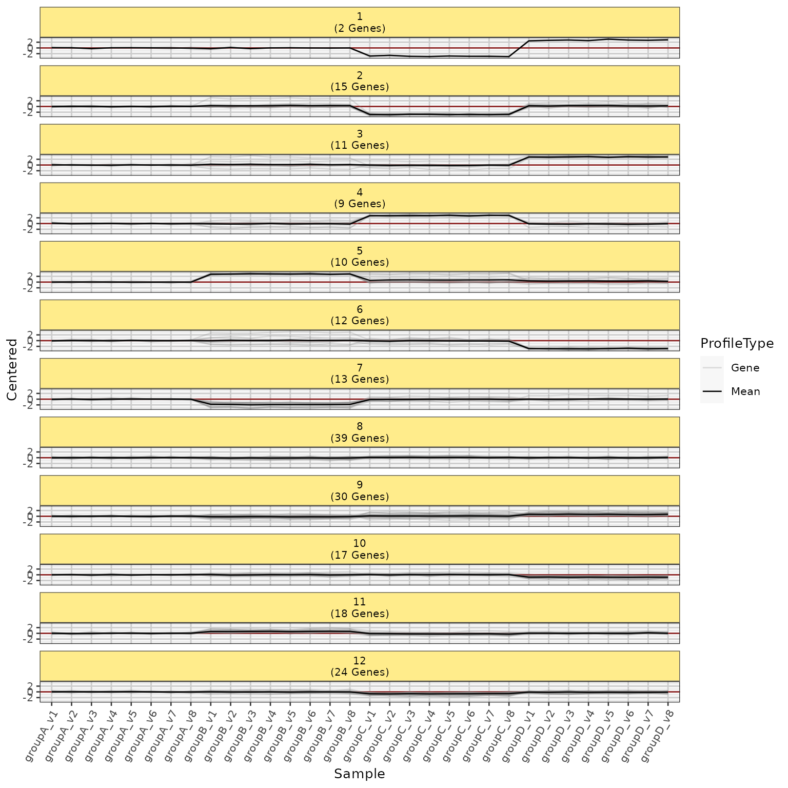
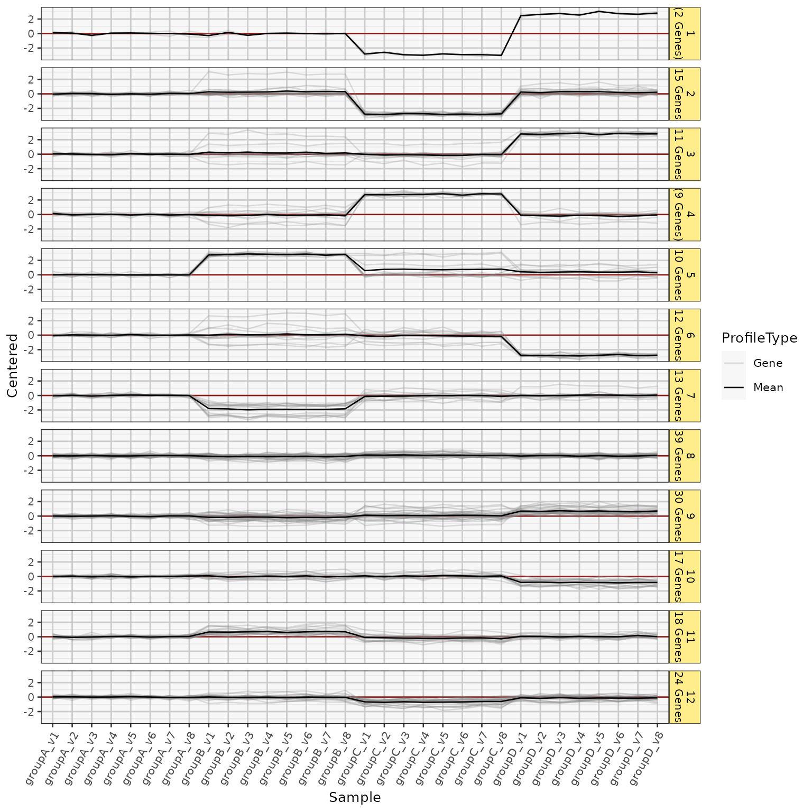

Profile Line Plot for Heatmap of SummarizedExperiment data
Source:R/jam_sestats_hm_profile.R
heatmap_profile_plot.RdConvert Heatmap of SummarizedExperiment data into Profile Line Plot, with row and column groups and facets as relevant.
Usage
heatmap_profile_plot(
hm,
display_profiles = c("rows", "group"),
summarize_column_split = TRUE,
se = NULL,
rowData_colnames = NULL,
profile_color = "#88888844",
mean_color = "#000000FF",
include_count = TRUE,
row_type = "Gene",
strip.position = "right",
base_size = 10,
panel.background.fill = "grey97",
facet_ncol = 1,
return_type = c("ggplot", "list"),
...
)Arguments
- hm
ComplexHeatmap::Heatmapobject, intended to use output fromheatmap_se(). It uses the data within the heatmap to produce the plot, therefore all data centering is used as defined inheatmap_se().- display_profiles
characterindicating which profiles to include:'rows': include a profile line for each row
'group': include a profile line for the row group.
- summarize_column_split
logicaldefault TRUE, whether to summarize values incolumn_splitby taking the mean across replicates (columns) within each column grouping.When
summarize_column_split=FALSEit will keep replicates as individual points, which may appear more consistent with the heatmap.
- rowData_colnames
charactervector, currently ignored. In future it may be used to apply different row groupings.- profile_color
characterstring, default is partially transparent, light grey. This color is used for the line profile color.- include_count
logicaldefault TRUE, whether to include the row count in the label for each row group.It uses
sep="\n"by default between the row group label, and the row count label. So to make the label all appear on one line, usesep=" ".
- row_type
characterstring, default"Gene"used wheninclude_count=TRUE, so the label becomes"11 Genes"The label should be singular, and the 's' is added when there is more than 1 row in the group.- strip.position
characterstring, default 'right', places the ggplot2 facet strip label on the right side. The other common option is 'top', which is better for long labels, but requires a taller graphics device to accomodate the number of row groups.- base_size
numericbase default font size for the ggplot2 theme, default 10 is relatively small, suitable for analysis. Use a larger number for figures, but adjust the graphics device size accordingly.- panel.background.fill
charactercolor used for the ggplot2 panel background color, default is very light grey (lighter than ggplot2 default). The grey color makes it slightly easier to recognize each plot panel.- ...
additional arguments are passed to internal functions, specifically
colorjam::theme_jam()which defines the ggplot2 theme. The theme can be replaced by addingggplot2::theme_bw()or something else for example.
Value
ggplot object suitable for plotting or further customization.
When
return_type='list'it returns alistwith 'hmtall' which is adata.framecontaining data used for the ggplot. If display_profiles includes 'group' thelistwill contain 'hmtall4' which is adata.framecontaining the row group mean values.When return_type='ggplot' (default) the
output@datacan also be used to inspect the underlying data.
Details
It uses the data within the heatmap to produce the plot,
therefore all data centering is used as defined in heatmap_se().
This plot is intended to produce a line plot equivalent to
the same data shown in heatmap form. Sometimes the linear plot
is more visually intuitive, and certainly is more effective
at conveying magnitudes than color gradient.
Row groups are detected by calling jamba::heatmap_row_order().
If there are no row groups, all rows are placed into the same group.
Column groups are also detected by calling jamba::heatmap_column_order().
The argument summarize_column_split=TRUE will optionally calculate
group mean per column group, but the default is FALSE.
See also
Other jamses heatmaps:
detect_heatmap_components(),
heatmap_column_group_labels(),
heatmap_se()
Examples
se <- make_se_test()
hm1 <- heatmap_se(se,
rowData_colnames="Class",
row_split=9,
column_split="group",
show_left_annotation_name="top",
left_annotation_name_rot=150,
sample_color_list=list(group=c(groupA="red")))
#> 'magick' package is suggested to install to give better rasterization.
#>
#> Set `ht_opt$message = FALSE` to turn off this message.
hm1drawn <- ComplexHeatmap::draw(hm1)

heatmap_profile_plot(hm1drawn, summarize_column_split=FALSE);

se <- jamses::make_se_test(nrow=200, ngroups=4, nreps=8)
hm <- jamses::heatmap_se(se,
rowData_colnames="Class",
apply_hm_column_title=TRUE,
column_split="group",
cluster_row_slices=TRUE,
controlSamples=head(colnames(se), 8),
row_split=12)
#> 'magick' package is suggested to install to give better rasterization.
#>
#> Set `ht_opt$message = FALSE` to turn off this message.
ComplexHeatmap::draw(hm)

heatmap_profile_plot(hm, strip.position="top")
#> Warning: The heatmap has not been initialized. You might have different results
#> if you repeatedly execute this function, e.g. when row_km/column_km was
#> set. It is more suggested to do as `ht = draw(ht); row_order(ht)`.
#> Warning: The heatmap has not been initialized. You might have different results
#> if you repeatedly execute this function, e.g. when row_km/column_km was
#> set. It is more suggested to do as `ht = draw(ht); column_order(ht)`.
#>
#> Attaching package: ‘dplyr’
#> The following object is masked from ‘package:jamses’:
#>
#> groups
#> The following objects are masked from ‘package:stats’:
#>
#> filter, lag
#> The following objects are masked from ‘package:base’:
#>
#> intersect, setdiff, setequal, union

heatmap_profile_plot(hm, summarize_column_split=FALSE, strip.position="top")
#> Warning: The heatmap has not been initialized. You might have different results
#> if you repeatedly execute this function, e.g. when row_km/column_km was
#> set. It is more suggested to do as `ht = draw(ht); row_order(ht)`.
#> Warning: The heatmap has not been initialized. You might have different results
#> if you repeatedly execute this function, e.g. when row_km/column_km was
#> set. It is more suggested to do as `ht = draw(ht); column_order(ht)`.

heatmap_profile_plot(hm, summarize_column_split=FALSE)
#> Warning: The heatmap has not been initialized. You might have different results
#> if you repeatedly execute this function, e.g. when row_km/column_km was
#> set. It is more suggested to do as `ht = draw(ht); row_order(ht)`.
#> Warning: The heatmap has not been initialized. You might have different results
#> if you repeatedly execute this function, e.g. when row_km/column_km was
#> set. It is more suggested to do as `ht = draw(ht); column_order(ht)`.
